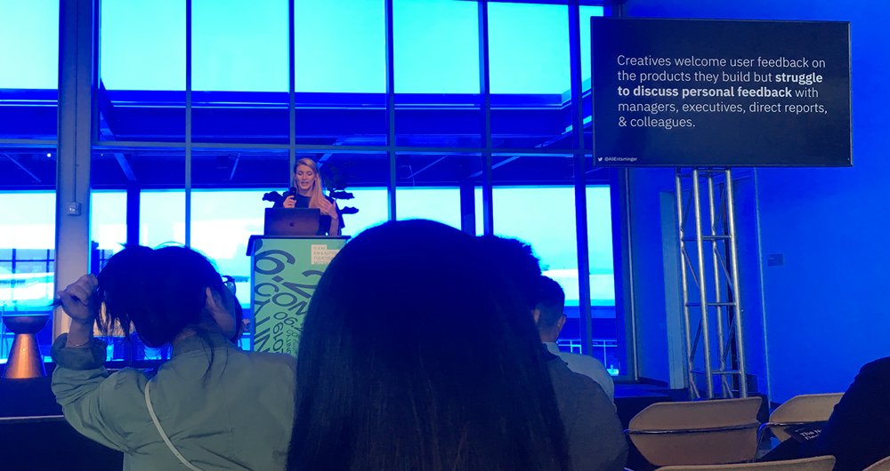

UX research internship at Essential.
In summer 2019, I interned at Essential's UX team as the only researcher. The experience working at a fast-pace consumer electronics startup has been challenging yet rewarding!
*This is an NDA-protected project.
Internship duration
11 weeks
June - August 2019
Methodologies
Literature review
Comparative analysis
Workshop
Use cases and scenarios
Usablity testing
Main delievereables
A product positioning strategy report
Three usability study reports
Two comparative analyses
WHAT I DID
Generative and evaluative research
Working as the only UX reesarcher within a team that developes at full-speed, I was very lucky to be able to work on research studies on different stages of the design process.
During th internship, I worked closely with my supervisors on identifying the postiioning strategy of a new prodcut category. This included identifying potential user groups and usage scenarios, as well as planning against key competition to direct product direction. On the other hand, I conducted regular usability studies for new product features and provided data-informed suggestions for the designers at the team. I also had the chance to share my research findings with the whole company during all-hands meeting.
Having the opportunity to work on both generative and evaluative resarch projects has allowed me to see the design process holistically, learn to guide product-line decitions, and reflect on my own end-to-end UX projects.
KEY TAKEAWAYS
Be proactive
As the only intern and researcher within the team, I had to conduct my studies independently most of the time. At times, this could be challenging as I wouldn't be able to get the most immediate feedback, or just have someone that I can directly observe and learn side by side.
With the goal to get the most out of this internship, I was inspired by a talk at San Francisco Design Week given by Alison Entsminger, the design lead at IBM "From Self-perception to Self-Awareness: Finding your Data, Feedback and Growth Potential", where she shared about how we should not be afraid of asking for feedback from others for a better version of ourselves.
At work, I proactively asked for feedback and suggestions from my supervisors and teammates. From them, I was able to identify a lot of room for improvement of my research skills that I wasn't aware of before, as well as learning from success stories shared by my.
Meanwhile, I also reached out to people from other teams at the company and shared with them about my work. By advocating UX practices with PMs, engineers, and coworkers from the operation team, I was not only able to collect feedback from them, establish great friendship, but I also felt I have help fostered the culture of UX within the company.

Alison from IBM shared an inspiring idea and motivated me to ask for feedback during my internship.
Catch my audeince's attention
As a researcher, I presented my research findings in front of different audience, including the UX director, the UX design team, and the whole company including the CTO and VPs of engineering. In order to deliver messages effectively, I would reach out to my future audeince and ask them what information they would be most interested in.
From there, I learned to develop different strategies for presentation. For instance, during the all-hands meeting, I showed close-captioned video clips of users' reactions to highlight usability issues that I observed during my studies. At presentations within the design team, I synthesized users' ideas on how they would design a feature differently, while referring the designs of similar products.
Over the course of the internship, I noticed that designers and engineers would mention my research findings during their presenations, when they explained their design decisions and the importance of certain technical feature. I was motivated by the possible impact of my research.
TESTIMONIAL
What my mentor says
The UX Director rated my overall performance as 'Outstanding'. Below is a shrot excerpt of her end-of-the-program feedback:
She became a trusted member of the team. She is accountable to her research area, has a sense of pride and personal accountability to end-to-end quality.